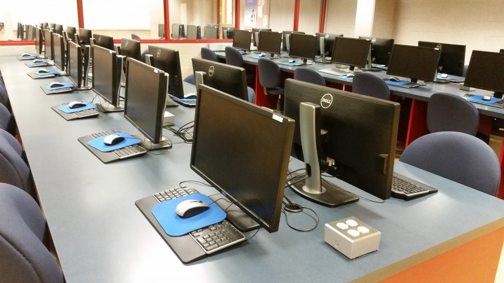

The campus has modern facilities, including lecture halls, computer labs, and a well-stocked library. Each campus of Metropolitan International University is designed to provide students with a comprehensive learning experience.
Lecture Hall
The Lecture Hall is suited to events, such as lectures, committees and seminars. It can also be adapted to provide a venue for press conferences, presentations and discussion panels to a small audience. It combines elegant, boardroom-style furnishing with a full complement of audio-visual and presentation equipment.

Computer Laboratory
The fully equipped Computer Lab with Internet connectivity complying with modern educational institute standards. Able to comfortably seat, each having their own desktop PC. The Lab is also equipped with a state-of-the-art multimedia Projector and screen as well as an Audio Visual system and is fully air conditioned.
Library
Library Services supporting your Success With a wide range of study areas and facilities, access to extensive study materials and helpful and well-informed staff, our library services are here to help you succeed.
Our collections are a mix of on-shelf materials and online resources providing access to over 265,000 printed books, 463,000 e-books and 80,000 e-journals titles from over 200 different publishers as well as reading for study.